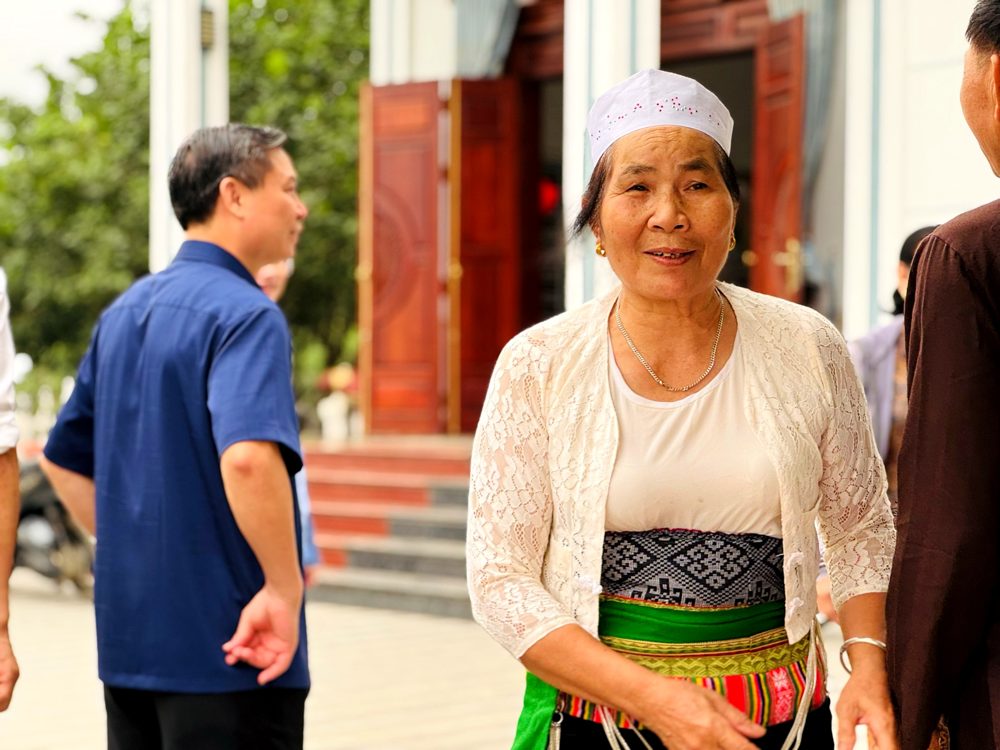
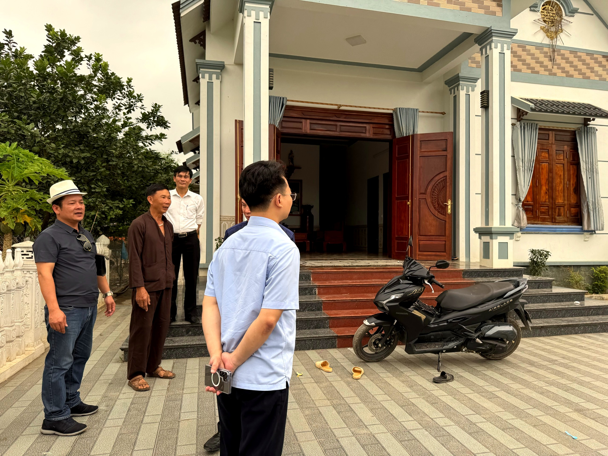

Loại hìnhTypeType
Homestay · lưu trúHomestay & AccommodationHomestay et hébergement

Homestay Đồi Núi nằm liền kề hồ Baibóo tại thôn Đồi Dùng, sở hữu khuôn viên rộng rãi với tầm nhìn thẳng ra mặt hồ. Đây là điểm lưu trú và ẩm thực kết hợp hoạt động trải nghiệm xe đạp – loại hình được nhiều du khách ưa chuộng khi khám phá không gian đồng quê và mặt hồ yên bình của Mường Cốc.
Gia chủ Chu Văn Kiền và gia đình nấu ẩm thực Mường theo thực đơn truyền thống, ưu tiên nguyên liệu địa phương thu hái tại chỗ. Không gian nhà rộng rãi, thoáng mát, thích hợp đón cả đoàn khách tham quan và trải nghiệm ngắn ngày lẫn lưu trú qua đêm.
Kết hợp giữa đạp xe ven hồ, bữa cơm Mường và khung cảnh đồi núi xanh mướt, điểm đến tạo ra trải nghiệm vừa năng động vừa thư giãn – phù hợp với nhiều nhóm đối tượng khách.
Homestay Đồi Núi, adjacent to Hồ Baibóo in thôn Đồi Dùng, boasts spacious grounds with direct lake views. It's a charming accommodation and dining spot, offering bicycle tours – a popular choice for guests exploring Mường Cốc's serene countryside and tranquil lake.
Host Chu Văn Kiền and his family prepare Mường cuisine following traditional recipes, prioritizing locally sourced ingredients. The spacious, airy home is ideal for welcoming both day-trip groups and overnight guests.
Combining lakeside cycling, a Muong meal, and lush green hills, this destination offers an experience that is both active and relaxing – suitable for a wide range of visitors.
Le Homestay Đồi Núi, adjacent au Hồ Baibóo dans thôn Đồi Dùng, dispose de vastes jardins avec une vue directe sur le lac. C'est un lieu d'hébergement et de restauration charmant, proposant des activités de cyclisme – un choix prisé des visiteurs pour explorer la campagne paisible et le lac serein de Mường Cốc.
L'hôte Chu Văn Kiền et sa famille préparent une cuisine Mường selon des recettes traditionnelles, privilégiant les ingrédients locaux récoltés sur place. La maison spacieuse et aérée est idéale pour accueillir aussi bien les groupes de passage que les hôtes pour la nuit.
Combinant le cyclisme au bord du lac, un repas Muong et des paysages de collines verdoyantes, cette destination offre une expérience à la fois active et relaxante – adaptée à un large éventail de visiteurs.
| Lưu trú homestayHomestay accommodationHébergement chez l'habitant | Phòng nghỉ, đặt trướcAccommodation, pre-book your stay.Hébergement sur réservation. |
| Ẩm thực MườngMuong CuisineCuisine Muong | Bữa ăn theo thực đơn gia đình, đặt trướcFamily-style meals, pre-orderedRepas de style familial, sur commande |
| Thuê xe đạpBike RentalLocation de vélos | Xe đạp địa hình đạp ven hồ và quanh bảnMountain biking along the lake and around the village.VTT le long du lac et autour du village. |
| Trải nghiệm xe đạp có hướng dẫnGuided cycling experience.Expérience de cyclisme guidé. | Cùng người dân khám phá cung đường quanh Mường CốcExplore the paths around Muong Coc with local residentsExplorez les chemins autour de Muong Coc avec les habitants |
| Ngắm hồLake ViewsVues sur le lac | Ngồi thư giãn ven hồ BaibóoRelax by Baibóo LakeDétendez-vous au bord du lac Baibóo |
| Đón khách đoànGroup WelcomeAccueil de groupes | Phục vụ nhóm và đoàn lớnCatering to groups and large toursServices pour groupes et grandes excursions |


Homestay Đồi Núi hướng tới phát triển thành điểm đến kết hợp lưu trú – ẩm thực – hoạt động ngoài trời tiêu biểu của Mường Cốc, trong đó trải nghiệm xe đạp khám phá hồ và bản làng là sản phẩm đặc trưng. Gia đình cam kết phục vụ theo tinh thần hiếu khách người Mường và đóng góp vào sinh kế cộng đồng bền vững. Điểm đến Du lịch cộng đồng Mường Cốc, Xã Mỹ Đức – Thành phố Hà NộiDoi Nui Homestay aims to develop into a quintessential Muong Coc destination combining accommodation, dining, and outdoor activities, with cycling tours to explore the lake and villages as a signature product. The family is committed to serving with Muong hospitality and contributing to sustainable community livelihoods. A Muong Coc Community-Based Tourism Destination, My Duc Commune – Hanoi City.Le Homestay Doi Nui vise à devenir une destination emblématique de Muong Coc, combinant hébergement, gastronomie et activités de plein air, avec des balades à vélo pour explorer le lac et les villages comme produit phare. La famille s'engage à servir avec l'hospitalité Muong et à contribuer aux moyens de subsistance durables de la communauté. Une destination de tourisme communautaire à Muong Coc, commune de My Duc – Ville de Hanoi.